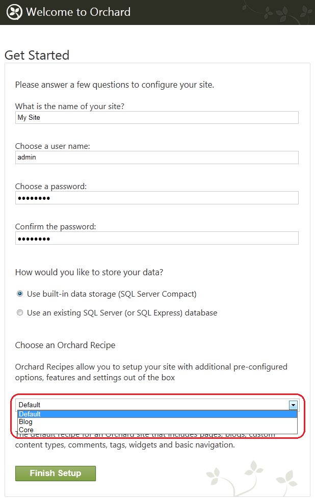
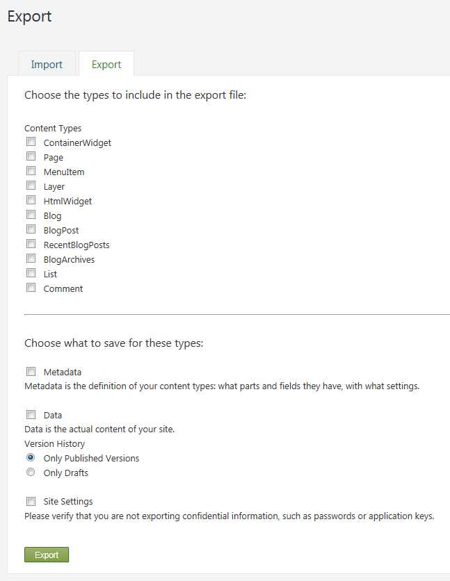
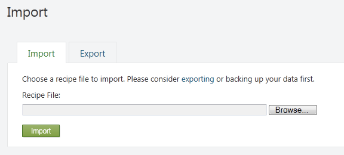

Orchard simplifies the process of setting up a new website by letting you use website recipes. A recipe is an XML file that contains the startup configuration for an Orchard website. When you start Orchard for the first time, you can select a recipe that best matches the type of site you want to set up. For example, if you want your website to be a blog, you can select the Blog recipe, and much of the configuration work will be done for you.
You can create your own recipes and customize the process of setting a website and configuring Orchard features. Recipes can also instruct Orchard to download and install modules and themes from the Orchard Gallery during website setup.
This article describes how to use recipes, how to create custom recipes, export or import recipes, and how to create a specialized distribution of Orchard using recipes.
Using a Recipe to Create a Website
When you first set up an Orchard website, the setup page that is displayed contains a list of recipes. You can choose a recipe to base your new website on.

The initial list contains the following recipes:
- Default. The default recipe for an Orchard site that includes pages, blogs, custom content types, comments, tags, widgets, and basic navigation.
- Blog. A recipe that provides an installation profile with features for a personal blog.
- Core. A recipe that provides the Orchard framework with limited end-user functionality that can be used during development.
After you choose a recipe and click Finish Setup, Orchard creates the website using the selected recipe and opens the home page.
How Recipes Work
An Orchard recipe is an XML file that contains website configuration information. The following example shows the contents of the default recipe file.
<?xml version="1.0"?>
<Orchard>
<Recipe>
<Name>Default</Name>
<Description>The default recipe for an Orchard site that includes pages, blogs, custom content types, comments, tags, widgets and basic navigation.</Description>
<Author>The Orchard Team</Author>
<WebSite>http://orchardproject.net</WebSite>
<Tags></Tags>
<Version>1.0</Version>
<IsSetupRecipe>true</IsSetupRecipe>
</Recipe>
<Feature enable="Orchard.Blogs,Orchard.Comments,Orchard.Tags,Orchard.Alias,Orchard.Autoroute,
TinyMce,Orchard.MediaLibrary,Orchard.ContentPicker,Orchard.PublishLater,
Orchard.jQuery,Orchard.Widgets,Orchard.ContentTypes,
Orchard.Scripting,Orchard.Scripting.Lightweight,PackagingServices,Orchard.Packaging,
Orchard.Projections,Orchard.Fields,Orchard.OutputCache,Orchard.Taxonomies,Orchard.Workflows,
Orchard.Layouts,Orchard.Layouts.Tokens,
TheThemeMachine" />
<Metadata>
<Types>
<Page ContentTypeSettings.Draftable="True" TypeIndexing.Indexes="Search">
<TagsPart />
<LocalizationPart />
<TitlePart/>
<AutoroutePart />
<MenuPart />
</Page>
<BlogPost ContentTypeSettings.Draftable="True" TypeIndexing.Indexes="Search">
<CommentsPart />
<TagsPart />
<LocalizationPart />
<TitlePart/>
<AutoroutePart />
</BlogPost>
</Types>
<Parts>
<BodyPart BodyPartSettings.FlavorDefault="html" />
</Parts>
</Metadata>
<Settings />
<Migration features="*" />
<Command>
layer create Default /LayerRule:"true" /Description:"The widgets in this layer are displayed on all pages"
layer create Authenticated /LayerRule:"authenticated" /Description:"The widgets in this layer are displayed when the user is authenticated"
layer create Anonymous /LayerRule:"not authenticated" /Description:"The widgets in this layer are displayed when the user is anonymous"
layer create Disabled /LayerRule:"false" /Description:"The widgets in this layer are never displayed"
layer create TheHomepage /LayerRule:"url '~/'" /Description:"The widgets in this layer are displayed on the home page"
site setting set baseurl
menu create /MenuName:"Main Menu"
page create /Slug:"welcome-to-orchard" /Title:"Welcome to Orchard!" /Path:"welcome-to-orchard" /Homepage:true /Publish:true /UseWelcomeText:true
menuitem create /MenuPosition:"0" /MenuText:"Home" /Url:"~/" /MenuName:"Main Menu"
widget create MenuWidget /Title:"Main Menu" /RenderTitle:false /Zone:"Navigation" /Position:"1" /Layer:"Default" /Identity:"MenuWidget1" /MenuName:"Main Menu"
theme activate "The Theme Machine"
</Command>
</Orchard>
The following sections of a recipe file are the elements that are most important to understand:
- Recipe. This section contains metadata about the recipe, such as its name and description.
- Feature. This section lists module features that Orchard will enable.
- Metadata. This section provides configuration for the types, parts, and fields that Orchard contains.
- Settings. This section provides a way to configure website settings.
- Command. This section lists commands that Orchard will run against your website in order to complete the setup. For more information about Orchard commands, see Using the Command-line Interface.
Creating a Custom Recipe
You can create your own recipe, which can then be added to the setup page or to your own module. Recipes added to the setup page can be selected by the user only during site setup; recipes added to a module can be executed by the user after site setup.
To get started with creating a custom recipe, you can select an existing recipe that you can tailor to your purposes. The following example shows how to start with the default recipe (default.recipe.xml) and add the Bing.Maps module and a theme, both of which will be downloaded and enabled during setup. The recipe also creates a blog and a page that displays the map widget. Finally, the recipe adds layers and menu tabs for the blog and map page.
<?xml version="1.0"?>
<Orchard>
<Recipe>
<Name>Custom Recipe</Name>
<Description>A recipe that includes a landing page with blog on a second tab.</Description>
<Author>The Orchard Team</Author>
<WebSite>http://orchardproject.net</WebSite>
<Tags></Tags>
<Version>1.0</Version>
<IsSetupRecipe>true</IsSetupRecipe>
</Recipe>
<Module packageId="Orchard.Module.Bing.Maps" />
<Theme packageId="Orchard.Theme.Dark" current="true" />
<Feature enable="Orchard.Blogs,Orchard.Comments,Orchard.Tags,
Orchard.Lists,TinyMce,Orchard.Media,Orchard.MediaPicker,Orchard.PublishLater,
Orchard.jQuery,Orchard.Widgets,Orchard.Widgets.PageLayerHinting,Orchard.ContentTypes,
Orchard.Scripting,Orchard.Scripting.Lightweight,
PackagingServices,Orchard.Packaging,Gallery,Gallery.Updates,
TheThemeMachine,Bing.Maps" />
<Metadata>
<Types>
<Page ContentTypeSettings.Draftable="True" TypeIndexing.Included="true">
<TagsPart />
<LocalizationPart />
</Page>
<BlogPost ContentTypeSettings.Draftable="True" TypeIndexing.Included="true">
<CommentsPart />
<TagsPart />
<LocalizationPart />
</BlogPost>
</Types>
<Parts>
<BodyPart BodyPartSettings.FlavorDefault="html" />
</Parts>
</Metadata>
<Settings />
<Migration features="*" />
<Command>
layer create Default /LayerRule:"true"
layer create Authenticated /LayerRule:"authenticated"
layer create Anonymous /LayerRule:"not authenticated"
layer create Disabled /LayerRule:"false"
layer create TheHomepage /LayerRule:"url '~/'"
layer create Blog /LayerRule:"url '~/Blog'"
layer create Maps /LayerRule:"url '~/Maps'"
page create /Slug:"welcome-to-orchard" /Title:"Welcome to Orchard!" /Path:"welcome-to-orchard" /Homepage:true /Publish:true /UseWelcomeText:true
blog create /Slug:"blog" /Title:"Blog" /Homepage:false /Description:"This is your Orchard Blog."
page create /Slug:"maps" /Title:"Bing Maps" /Path:"bing-maps" /Homepage:false /Publish:true /UseWelcomeText:false
widget create HtmlWidget /Title:"First Leader Aside" /Zone:"TripelFirst" /Position:"5" /Layer:"TheHomepage" /UseLoremIpsumText:true
widget create HtmlWidget /Title:"Second Leader Aside" /Zone:"TripelSecond" /Position:"5" /Layer:"TheHomepage" /UseLoremIpsumText:true
widget create HtmlWidget /Title:"Third Leader Aside" /Zone:"TripelThird" /Position:"5" /Layer:"TheHomepage" /UseLoremIpsumText:true
menuitem create /MenuPosition:"1" /MenuText:"Home" /Url:"" /OnMainMenu:true
menuitem create /MenuPosition:"2" /MenuText:"Blog" /Url:"~/Blog" /OnMainMenu:true
menuitem create /MenuPosition:"3" /MenuText:"Maps" /Url:"~/Maps" /OnMainMenu:true
</Command>
</Orchard>
Note the following about the changes made to the default recipe:
- Module element. This element identifies a module that will be downloaded from the Orchard Gallery on the website. This does not enable the features in the module; it only downloads it. To enable a module feature, add it to the
Featureelement as shown in the example. - Theme element. This element identifies a theme that will be downloaded from the Orchard Gallery. If the current attribute is set to true, the theme becomes the current theme and is applied to the website. Otherwise, it will just be downloaded. It is also possible to enable a theme by using the
enable="true"attribute. Otherwise the theme is initially disabled. If you usecurrent="true", the theme is automatically enabled.Important: The Module and Theme elements must appear in the recipe immediately after the Recipe element.
- layer create command. This was added in order to create the Blog and Maps layer.
- blog create command. This was added in order to create the blog.
- page create command. This was added in order to create the Maps page.
- menuitem create command. This was added in order to create the Blog and Maps menu tabs.
In addition to the attributes shown here for the Module and Theme elements, both elements support a version attribute. If the version is specified, that version will be downloaded from the Orchard Gallery. Both elements also have a repository attribute. By default, the repository attribute points to the Orchard Gallery. However, you can set it to any feed URL.
To add your custom recipe to the setup page use the IsSetupRecipe attribute in the Recipe element as shown above, and put the recipe XML file into the Recipes folder (or its subfolder) of a module. Note that recipe files should have a name ending in .recipe.xml, e.g. Custom.recipe.xml. When you set up a new Orchard website, the recipe list will contain your setup recipe.

Note that recipes used for importing mustn't contain an IsSetupRecipe element or it should be set to false.
Importing and Exporting a Recipe
Orchard enables you to import and export recipes from and to the web server. It uses the Import Export module, which is disabled by default. Therefore you must enable the module to use this feature.
To enable the Import Export module, open the dashboard and click Modules. On the Modules page, select the Features tab. Under Content, locate the Import Export feature and click Enable. A message at the top of the page will notify you when the feature is enabled. You will also see Import/Export listed in the dashboard feature list.

To export a recipe, open the dashboard and click Import/Export. Click the Export tab and then choose the types, metadata, data, and settings to include in the export file. When you are finished, click Export.

To import a recipe, click Import/Export and then click the Import tab. Browse to the recipe file and click Import.

Creating a Specialized Distribution of Orchard
Recipes simplify the process of creating a specialized distribution of Orchard. Using recipes (and optionally custom modules), you can configure a version of the Orchard platform that is optimized for nearly any type of website you can envision.
To create a specialized distribution of Orchard
- Enlist in the Orchard source code. For information about how to enlist in Orchard, see Setting Up a Source Enlistment.
- Sync to the latest build.
- Create a custom recipe and add it to the Orchard.Web/Modules/Orchard.Setup/Recipes folder. If you want your recipe to be the only option, you can remove the other recipe files.
- Add any custom modules to the Orchard.Web/Modules folder.
- Compile the project.
- Distribute all files under the Orchard.Web folder.